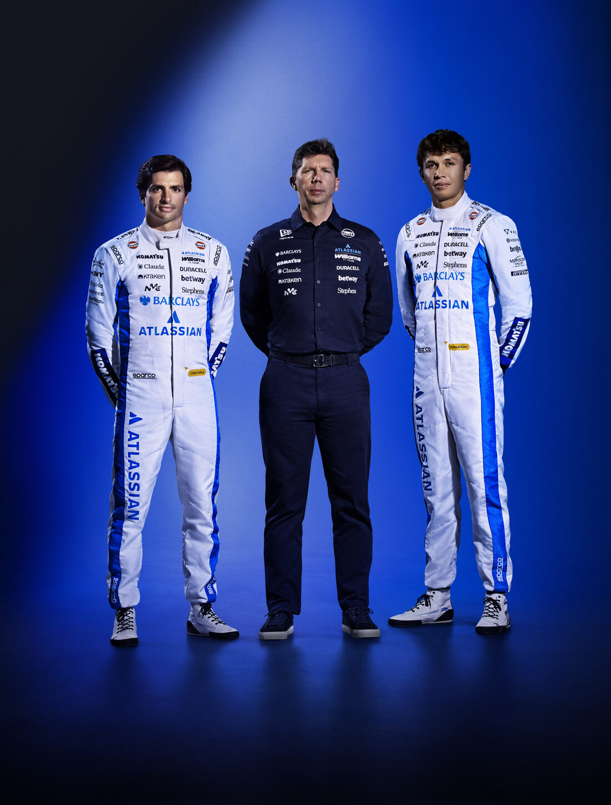
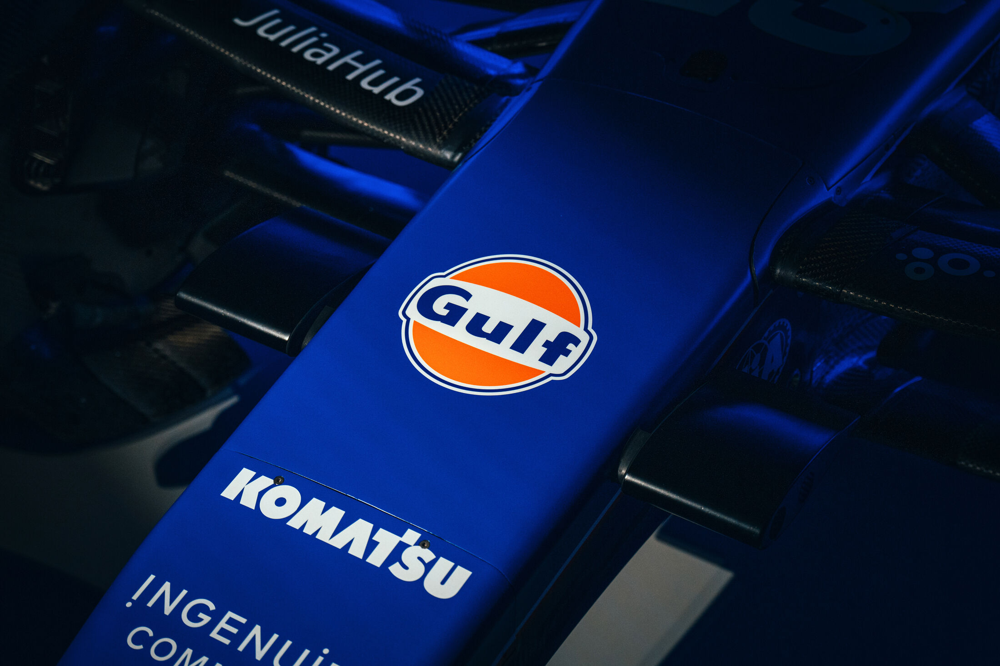
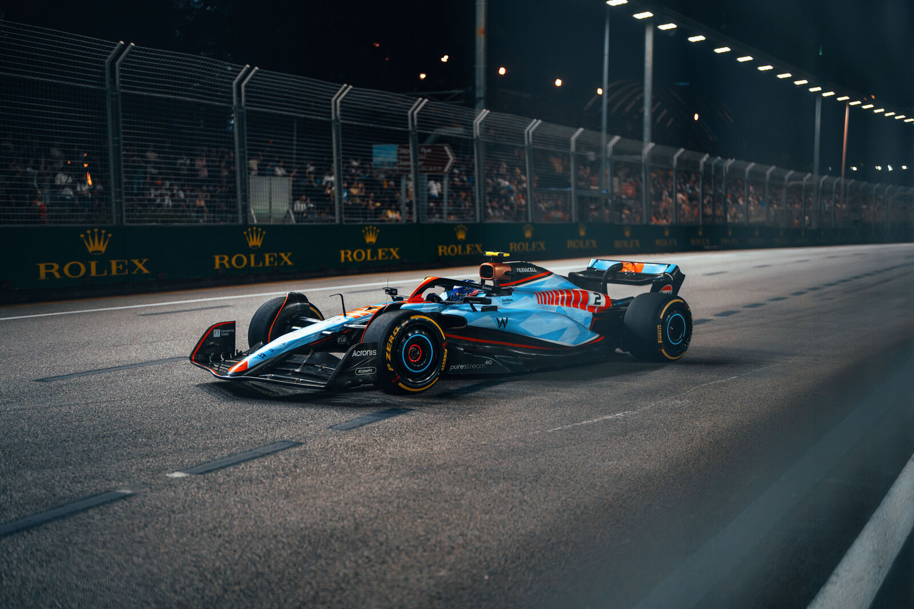
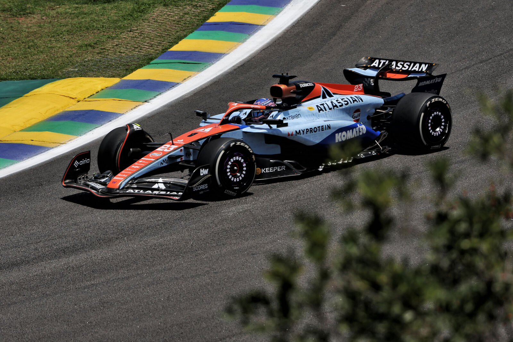
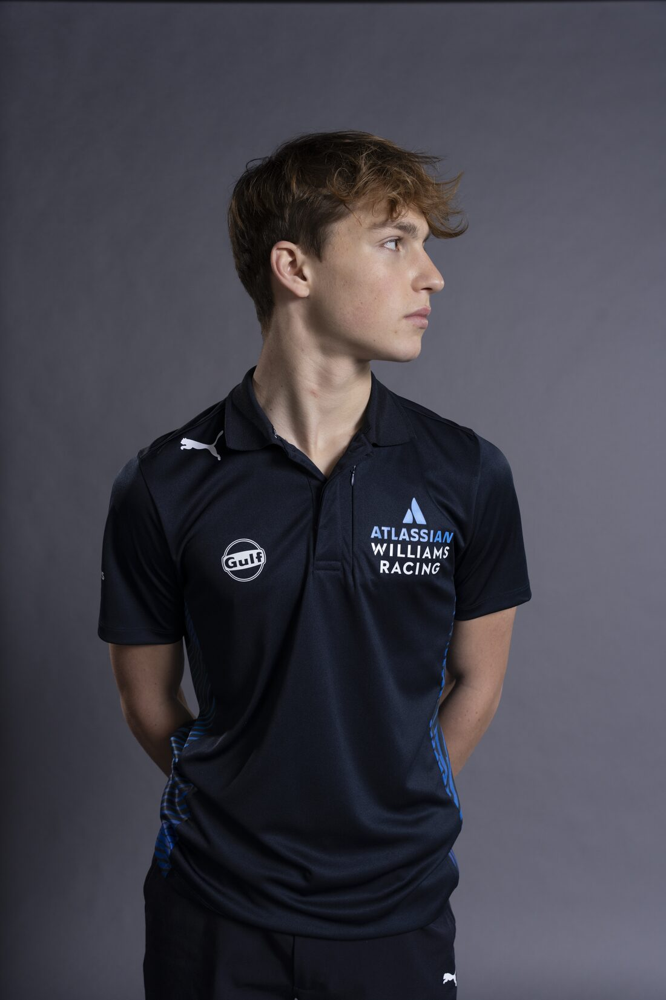

Gulf с гордост удължава партньорството си с Atlassian Williams Formula 1 Team и за сезон 2026. От началото на сътрудничеството през 2023 г. двете марки споделят обща амбиция: да доближат феновете до вълнението на Формула 1. С развитието на партньорството Gulf и Williams се фокусират върху изграждането на дългосрочна инерция както на пистата, така и извън нея.

С моторспорт наследство от над 40 години Gulf има роля на най-високите нива на световните състезания. Дългогодишното участие помогна на марката да се утвърди като едно от най-разпознаваемите имена в партньорствата в моторните спортове. Днес това наследство продължава чрез сътрудничеството на Gulf с Atlassian Williams F1 Team, което подкрепя следващата глава на състезателния спорт.
Дългосрочната визия на Williams остава ясна. Вече в третата си година под ръководството на Team Principal Джеймс Вайълс отборът продължава да инвестира в устойчиво развитие и затвърждава ангажимента си към прогрес и производителност на стартовата решетка на Формула 1.


Сезон 2025 беше голяма крачка напред за Williams — с най-много точки от 2016 г. насам, внушителните 137. Пристигането на победителя в Гран при Карлос Сайнс редом с Алекс Албон създаде силна и конкурентна двойка пилоти, която допринесе за две подиумни класирания през сезона и пето място в класирането при конструкторите.
Тези резултати отразяват възходящата траектория на отбора и подчертават положителната инерция, която продължава да се изгражда, докато Williams гледа към следващите сезони.

През 2025 г. Gulf постави страстта на феновете на преден план с Driven by Words — уникална кампания за ливрея, която отбелязва емоционалната връзка между привържениците и моторспорта. Фенове от цял свят бяха поканени да изпратят думи, които улавят духа, интензивността и енергията на състезанията.
Отзивът надмина очакванията. Бяха изпратени над 140 000 думи от цял свят, като 493 от тях на 12 различни езика бяха избрани да красят специалната ливрея Gulf x Williams, вдъхновена от наследството. С емблематичните цветове на Gulf еднократният дизайн дебютира на пистата в Гран при на Сао Пауло с пилоти Карлос Сайнс и Алекс Албон.

Отвъд Формула 1 партньорството на Gulf обхваща и Williams Racing Driver Academy и подкрепя изгряващи таланти при първите им стъпки към професионална кариера в моторните спортове. Чрез това сътрудничество Gulf има активна роля в развитието на пилоти както на пистата, така и извън нея.
Ключова част от тази подкрепа е Team Elevate — програма, създадена да подготви пилотите от Академията за изискванията на елитната надпревара. Инициативата се фокусира върху нагласа, устойчивост и работа в екип и съчетава индивидуални предизвикателства с развиващи работилници извън пистата. Програмата се води от световния шампион във Формула 1 за 1996 г. Деймън Хил, чийто опит дава ценна гледна точка и насоки.
През сезон 2025 феновете получиха безпрецедентен достъп зад кулисите на Академията чрез ексклузивно съдържание. С поглед към 2026 г. Gulf планира да надгради този ангажимент и да сподели още повече тренировъчни моменти и уникални перспективи, докато следващото поколение пилоти продължава да се развива.